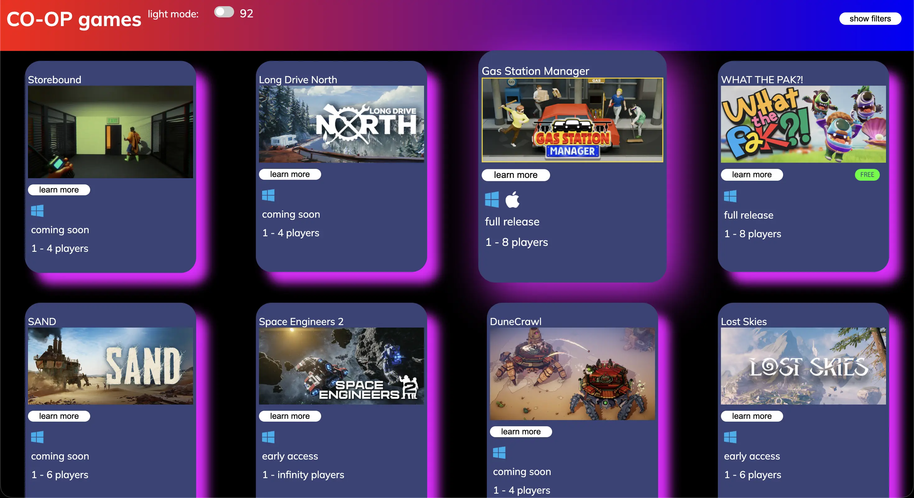

co-op games

In 2024 I started playing co-op games with my friends like Lethal Company and I started to look for other co-op games. It got to a point where I was telling my friends about so many co-op games they eventually said: "Make a website, we can't keep track." So I did. Along the way I user-tested and found that one of the things people didn't like was that the theme didn't match the audience; so I added a dark mode toggle and set it to dark by default, I also changed the cards to pink instead of dark blue to make them pop.
check it out here:
https://batterydrain.github.io/realco-opGames/.jpg)